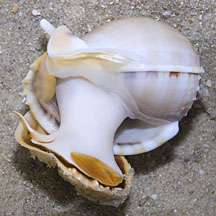
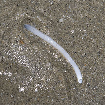
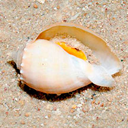
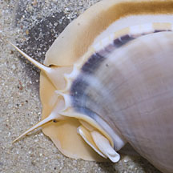
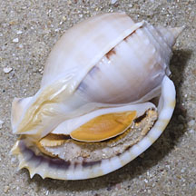
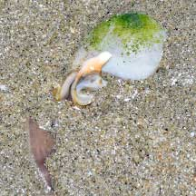

|
|
| shelled snails text index | photo index |
| Phylum Mollusca > Class Gastropoda > Family Cassidae |
| Grey
bonnet snail Phalium glaucum Family Cassidae updated Jan 2020 Where seen? This beautiful snail was seen on sandy areas near lush seagrass meadows. Elsewhere, they are considered common on sandy bottoms, especially on exposed sand flats and close to dead coral areas. Intertidal and shallow subtidal zones to a depth of about 10 m. Features: 8-12cm long, elsewhere about 9cm, up to 14cm. Shell typical helmet shape with a large body whorl and tiny spire, thus resembling a bonnet. The shell is smooth and grey without any markings. It has a notch in its shell so that its siphon can be extended vertically upwards like a snorkel, probably allowing it to breathe while it stays beneath the sand to hunt or eat its prey. It has a white body and large yellowish foot which is edged in brown, the operculum is fan-shaped and bright yellow. |
 Thick strong foot. Cyrene Reef, Aug 11 |
 Buried with only its siphon sticking out. Changi East, Oct 11 |
 Juvenile with less developed shell. Cyrene Reef, Aug 11 Photo shared by Loh Kok Sheng on flickr. |
| What does it eat? According to Tan, it feeds on sea urchins but according to Poutiers it feeds on sand dollars. On our shores, they have been seen on top of Cake sand dollars, and when the sand dollar is examined, a hole is seen in the sand dollar skeleton. This suggests the snail bored the hole. For more gruesome feeding details, see Family Cassidae. |
 On top of a Cake sand dollar. Cyrene Reef, Aug 11 |
 Notch in the shell for its siphon. |
 |
| Baby bonnets: Egg capsules usually form an irregular mass, the result of several females spawning together. |
Status and threats: The Grey bonnet is listed as 'Endangered' in the Red List of threatened animals of Singapore. It is threatened by habitat loss and over-collection. The Book states that it has not been seen since the early 1970s and its status needs investigation to determine if there are any remaining populations. |
 |
| Grey bonnet snails on Singapore shores |
On wildsingapore
flickr
|
| Other sightings on Singapore shores |
 Eating a sand dollar? Changi East (Lost Coast), Jun 22 Photo shared by Loh Kok Sheng on facebook. |
|
Links
References
|